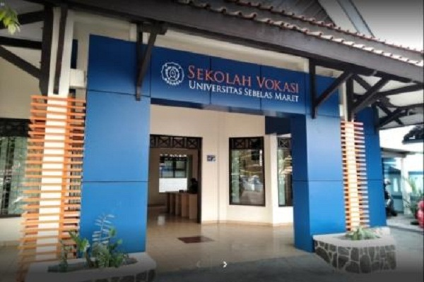

SEKOLAH VOKASI UNS
HOME
ABOUT
CONTACT

ABOUT
Sekolah Vokasi UNS memiliki 24 program studi yang terdiri dari 22 Program Diploma 3 dan 2 Program Diploma 4. Dengan jumlah mahasiswa sebanyak 6.470 mahasiswa dan didukung oleh 197 tenaga pendidik (dosen) dan 56 Tenaga Kependidikan, Sekolah Vokasi turut berperan aktif dalam pengembangan Sumber Daya Manusia, Ilmu Pengetahuan dan Teknologi. Beberapa target capaian Sekolah Vokasi UNS sampai tahun 2024 antara lain meng-upgrade program studi D3 menjadi D4 atau sarjana terapan, mengembangkan laboratorium setaraf industri di masing-masing program studi, meningkatkan program studi terakreditasi unggul sebanyak 50%, dan membentuk dewan dosen yang terdiri dari dosen UNS dan dosen dari Dunia Usaha dan Dunia Industri (DUDI). Kami menerapkan kurikulum yang terdiri dari minimal 60% praktik dan maksimal 40% teori. Kami memiliki program Kuliah Magang Industri yang diampu oleh team teaching antara dosen dan praktisi, dan desain kuliah ini dilakukan berbasis proyek. Seluruh lulusan kami memiliki sertifikat kompetensi sehingga, diharapkan, lulusan kami siap bekerja di Dunia Usaha dan Dunia Industri.
[Sumber]
_